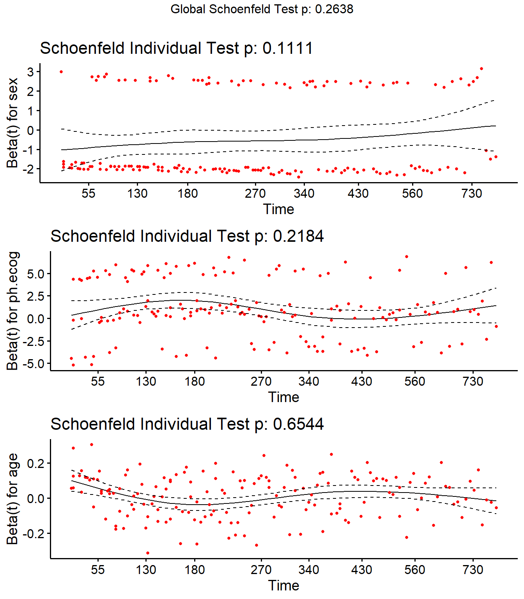

The KM curve with logrank test is a univariate analyses describing the effect of a single categorical factor variable on survival. Parametric and semi-parametric models, on the other hand, are able to describe the effect of multiple covariates. The Cox proportional hazards model is a semi-parametric model. The Cox model expresses the expected hazard, \(h(t)\), as an unspecified baseline hazard, \(h_0(t)\), multiplied by the exponential of a linear combination of parameters, \(\psi = e^{X\beta}\).
\(h_0(t)\) is unspecified because it cancels out of the model. To see this, consider a hypothetical data set where 6 participants are assumed to fall into one of two hazards: participants 1, 2, and 3 have \(h_0\) and 4, 5, and 6 have \(\psi h_0\). Working through the event occurrences, the survival function is the product of each of the failure probabilities. Suppose participant 1 fails first. \(p_1 = \frac{h_0(t_1)}{3 \cdot h_0(t_1) + 3 \psi \cdot h_0(t_1)}\). Suppose participant 2 censors, then participant 4 fails. \(p_2 = \frac{\psi h_0(t_2)}{1 \cdot h_0(t_2) + 3 \psi \cdot h_0(t_2)}\). Now participant 3 fails. \(p_3 = \frac{h_0(t_3)}{1 \cdot h_0(t_3) + 2 \psi \cdot h_0(t_3)}\). Notice how \(h_0(t)\) cancels in each ratio. The partial likelihood is the product of the failure probabilities, \(L(\psi) = \frac{\psi}{(3 + 3 \psi)(1 + 3 \psi)(1 + 2 \psi)}\).
Find the value of \(\psi\) that maximizes \(L(\psi)\). \(L(\psi)\) is difficult to optimize, but its log is easier. \(l(\beta) = X \beta - \log (3 + 3 e^{X\beta}) - \log (1 + 3 e^{X\beta}) - \log (1 + 2 e^{X\beta})\). A function searches for the \(\beta\) producing the global max. \(h_0(t)\), the baseline hazard, is estimated with non-parametric methods.
The Cox model is essentially a multiple linear regression of the log hazard on \(X\), with the baseline hazard \(h_0(t)\) acting as a time-dependent intercept term. The covariates act multiplicatively on the hazard at any point in time. Thus the hazard is proportional to the covariate values (Bradburn 2003). The proportionality of the model comes from the lack of time dependence in the \(X\) variables. The ratio of the hazard functions of two individuals is
The ratio of person i’s and person j’s hazard at any time t is a function of the difference in the regression variables, not of t. I.e., i’s hazard is a constant proportion of j’s hazard.
There are three ways to test the null hypothesis that coefficients have no effect, \(H_0 : \beta = 0\): the Wald test, the score test, and the likelihood ratio test.
The Wald test statistic is \(Z = \hat{\beta} / se({\hat{\beta}})\). Calculate \(se({\hat{\beta}})\) from the second derivative of \(l(\beta)\). As with other Wald tests, the square of this standard normal random variable is distributed chi-square, so you can equivalently test whether \(Z^2 > \chi_{\alpha, 1}^2\).
The score test compares the slope of \(l(\beta)\) at \(\beta = 0\) to 0. The test statistic is normally distributed, and again, its square is distributed chi-square.
The likelihood ratio test statistic equals \(2 [l(\beta = \hat{\beta}) - l(\beta = 0)]\). It has a chi-square distribution with one degree of freedom.
The Cox proportional hazards model is analogous to the logistic regression model. Rearranging \(h(t) = h_0(t) \cdot e^{X \beta}\),
\[\ln \left[ \frac{h(t)}{h_0(t)} \right] = X \beta. \tag{4.2}\]
Whereas logistic regression predicts the log odds of the response, Cox regression predicts the log relative hazard (relative to the unspecified baseline) of the response. \(\beta\) is the change in the log of the relative hazard associated with a one unit change in \(X\). Its antilog is the hazard ratio (HR). A positive \(e^{\beta_j}\) means the hazard increases with the covariate.
The Cox proportional hazards model is demonstrated here with a case study using the survival::lung data set used in Chapter 2. The study investigated differences in all-cause mortality between men and women diagnosed with advanced lung cancer. 227 participants aged 39 to 82 were monitored up to three years until time of death. The participants were segmented into three groups according to their ECOG performance score: Asymptomatic, symptomatic but completely Ambulatory, and Bedridden. Participants’ age and gender were captured as controlling covariates. We couldn’t make use of them in the KM analysis, but we can now. Table 4.1 presents the summary statistics of the data set.
Fit a Cox proportional hazards model with survival::coxph().
cox_fit <-coxph(Surv(time, status =="died") ~ sex + ph.ecog + age,data = d_lung)summary(cox_fit)
Call:
coxph(formula = Surv(time, status == "died") ~ sex + ph.ecog +
age, data = d_lung)
n= 227, number of events= 164
coef exp(coef) se(coef) z Pr(>|z|)
sexFemale -0.551322 0.576188 0.167987 -3.282 0.00103 **
ph.ecogAmbulatory 0.409461 1.506006 0.199596 2.051 0.04022 *
ph.ecogBedridden 0.915752 2.498654 0.227042 4.033 5.5e-05 ***
age 0.011031 1.011092 0.009297 1.186 0.23544
---
Signif. codes: 0 '***' 0.001 '**' 0.01 '*' 0.05 '.' 0.1 ' ' 1
exp(coef) exp(-coef) lower .95 upper .95
sexFemale 0.5762 1.7355 0.4145 0.8009
ph.ecogAmbulatory 1.5060 0.6640 1.0184 2.2270
ph.ecogBedridden 2.4987 0.4002 1.6012 3.8991
age 1.0111 0.9890 0.9928 1.0297
Concordance= 0.637 (se = 0.025 )
Likelihood ratio test= 30.08 on 4 df, p=5e-06
Wald test = 29.77 on 4 df, p=5e-06
Score (logrank) test = 30.94 on 4 df, p=3e-06
A negative coefficient estimator means the hazard decreases with increasing values of the variable. Females have a log hazard of death equal to coef(cox_fit)[1] = -0.55 of that of males. The exponential is the hazard ratio (HR), the effect-size of the covariate. Being female reduces the hazard by a factor of exp(coef(cox_fit)[1]) = 0.58 (42%). I.e., at any given time, 0.58 times as many females die as males.
The last section of the summary object is the three tests for the overall significance of the model. These three methods are asymptotically equivalent. The likelihood ratio test has better behavior for small sample sizes, so it is generally preferred. The p-values for all three tests are significant, indicating that the model is significant (i.e., not all \(\beta\) values are 0). Present the results with gtsummary.
Visualize the fitted Cox model for each risk group. Function survfit() estimates survival at the mean values of covariates by default. That’s usually not useful, so instead pass a data frame with test cases into the newdata argument.
Show the code
# Predictions will be for all levels of sex and ph.ecog, but only at the median# age.new_dat <-expand.grid(sex =levels(d_lung$sex),ph.ecog =levels(d_lung$ph.ecog),age =median(d_lung$age) ) |># strata is our key to join back to the fitted values.mutate(strata =as.factor(row_number()))# Create fitted survival curves at the covariate presets.fit_curves <-survfit(cox_fit, newdata = new_dat, data = d_lung)# `surv_summary()` is like `summary()` except that it includes risk table info,# confidence interval attributes, and pivots the strata longer.surv_summary <-surv_summary(fit_curves) |># The cases are labeled "strata", but `survsummary()` doesn't label what the # strata are! Get it from new_dat.inner_join(new_dat, by ="strata")# Now use ggplot() just like normal.median_line <- surv_summary |>filter(surv >= .5) |>summarize(.by =c(sex, ph.ecog), max_t =max(time))surv_summary |>ggplot(aes(x = time, y = surv)) +geom_line(aes(color = ph.ecog)) +geom_ribbon(aes(ymin = lower, ymax = upper, color = ph.ecog, fill = ph.ecog),alpha =0.4 ) +geom_segment(data = median_line,aes(x =0, xend = max_t, y = .5, yend = .5),linetype =2, color ="gray40" ) +geom_segment(data = median_line,aes(x = max_t, xend = max_t, y =0, yend = .5, color = ph.ecog),linetype =2 ) +facet_wrap(facets =vars(sex)) +scale_y_continuous(labels =percent_format(1)) +scale_color_manual(values = my_palette$warm) +scale_fill_manual(values = my_palette$warm) +labs(X ="Time", y ="Survival Probability", color =NULL, fill =NULL,title ="Cox fitted model",subtitle ="Age held at median." )
The Cox model is valid when censoring is independent of the probability of experiencing the event and there are no omitted variables. Additionally, there are two empircally testable assumptions (Ref1, Ref2).
Hazards are proportional. At any time t, all individuals experience a multiple of the same baseline hazard, \(h_0(t)\). A violation may occur if, for instance, a treatment loses effectiveness over time.
Linearity. The log of the hazard is linearly related to each of the covariates.
Test the proportionality assumption with Schoenfeld residuals. Schoenfeld residuals are like normal residuals (\(y\) vs \(\hat{y}\)) except that they predict \(X\) and compare \(\hat{X}\) to \(X\). survival::cox.zph() correlates scaled Schoenfeld residuals with time. If the hazards are time-invariant, the coefficient estimates will be zero. p-values < .05 reject the null hypothesis that the slope is zero. Below, the test is not statistically significant for each of the covariates, and the global test is also not statistically significant, so the proportional hazards assumption holds.
(cox_test_ph <-cox.zph(cox_fit))
chisq df p
sex 2.54 1 0.11
ph.ecog 3.04 2 0.22
age 0.20 1 0.65
GLOBAL 5.24 4 0.26
Plot the residuals with ggcoxzph(). There should be no systematic trend (the LOESS line is flat). If a covariate violates the PH assumption, consider adding time-dependent interactions or stratifying the model by that variable.
ggcoxzph(cox_test_ph)

Test the linearity assumption by plotting the Martingale residuals against the continuous covariates. A systematic curve or pattern indicates nonlinearity, so look for random scatter around zero. If you see a U-shape, S-shape, or any consistent deviation, consider transforming the covariate.
coxph(Surv(time, status =="died") ~ age, data = d_lung) |>ggcoxdiagnostics(type ="martingale", ox.scale ="observation.id")
You can also test for influential observations with deviance residuals. Deviance residuals are a normalized transformation of the Martingale residuals. Deviance residuals should be symmetrically distributed about zero with a standard deviation under 3. Remember that outliers are not necessarily a problem - investigate them.
p <-ggcoxdiagnostics(cox_fit, type ="deviance", ox.scale ="observation.id") +geom_point_interactive(aes(tooltip =glue("Obs. {xval}")))girafe(ggobj = p)
4.3 Interpreting Results
Table 4.2 shows the effect sizes as hazard ratios with 95% confidence intervals (CI) for each covariate in relation to overall survival. Each factor is assessed through separate univariate Cox regressions. All three factors of the multivariate model show how the factors jointly impact on survival. Being female increased survival, and higher ECOG scores impaired survival. Age was not statistically different from zero at the .05 level. The p-values for the comparisons between each ECOG type are presented, but it is possible to also show an overall likelihood ratio test for the differences between the categories as a whole.
sex_gt <-coxph(Surv(time, status =="died") ~ sex, data = d_lung) |>tbl_regression(exponentiate =TRUE)ph.ecog_gt <-coxph(Surv(time, status =="died") ~ ph.ecog, data = d_lung) |>tbl_regression(exponentiate =TRUE)age_gt <-coxph(Surv(time, status =="died") ~ age, data = d_lung) |>tbl_regression(exponentiate =TRUE)cox_uni_gt <- gtsummary::tbl_stack(list(sex_gt, ph.ecog_gt, age_gt))cox_multi_gt <-tbl_regression(cox_fit, exponentiate =TRUE)gtsummary::tbl_merge(list(cox_uni_gt, cox_multi_gt),tab_spanner =c("Univariate analyses", "Multivaraite analysis"))
Table 4.2: Hazard ratios from Cox PH model for lung dataset.
Characteristic
Univariate analyses
Multivaraite analysis
HR
95% CI
p-value
HR
95% CI
p-value
sex
Male
—
—
—
—
Female
0.59
0.43, 0.82
0.002
0.58
0.41, 0.80
0.001
ph.ecog
Asymptomatic
—
—
—
—
Ambulatory
1.45
0.98, 2.13
0.064
1.51
1.02, 2.23
0.040
Bedridden
2.54
1.64, 3.93
<0.001
2.50
1.60, 3.90
<0.001
age
1.02
1.00, 1.04
0.040
1.01
0.99, 1.03
0.2
Abbreviations: CI = Confidence Interval, HR = Hazard Ratio
4.4 Reporting
The guidelines for reporting the Kaplan-Meier test are from Laerd’s Kaplan-Meier using SPSS Statistics (Laerd 2015). Report the results like this.
227 Men and women diagnosed with advanced lung cancer aged 39 to 82 were monitored up to three years until time of death. Participants were classified into three groups according to their ECOG performance score: asymptomatic (n = 63), symptomatic but completely ambulatory (n = 113), and bedridden at least part of the day (n = 51). A Cox proportional hazards survival analysis was conducted to compare survival times among the three ECOG performance scores. A proportional hazards test confirmed the proportionality assumption, \(\chi^2\)(4) = 5.2, p = 0.264. Inspection of the deviance residuals confirmed there were no influential data points. The linearity assumption was confirmed by inspection of the Martingale residuals plotted against the continuous covariates. Censored cases were negatively associated with symptom severity, ambulatory, 1.51 (95% CI 1.02, 2.23; p=0.040), and bedridden, 2.50 (95% CI 1.60, 3.90; p<0.001) study groups. Participants that were ambulatory had a hazard ratio (HR) of 1.51 (95% CI 1.02, 2.23; p=0.040) relative to the asymptomatic group. The bedridden group had an HR of 2.50 (95% CI 1.60, 3.90; p<0.001). Sex female was protective against mortality, 0.58 (95% CI 0.41, 0.80; p=0.001).
4.5 Landmark Analysis
A landmark analysis measures survival after a milestone period. E.g., the dataset may present survival times after disease onset, but a treatment typically starts after 90 days. In a KM analysis manually adjust the data. In coxph() use the subset argument.
coxph(Surv(time, status =="died") ~ age + sex + ph.ecog, subset = time >90, data = d_lung)
4.6 Time-Dependent Covariates
If a covariate changes over time, lengthen the underlying data set with tmerge() to create time spans for the covariate values.
Dataset survival::pbc contains baseline and follow-up status for 312 people with primary biliary cirrhosis (PBC). survival::pbcseq contains their periodic lab results.
Statuses are 0 (censored), 1 (liver transplant), died (status = 2). Person 1 died at 400 days. Person 2 was still alive at 4,500 days.
id time status trt age sex
1 1 400 2 1 58.76523 f
2 2 4500 0 1 56.44627 f
3 3 1012 2 1 70.07255 m
4 4 1925 2 1 54.74059 f
5 5 1504 1 2 38.10541 f
6 6 2503 2 2 66.25873 f
The first step is to merge the base dataset with itself to define the studied event status, creating tstart, tstop, and death.
pbc_1 <-tmerge(pbc_0, pbc_0, id = id, death =event(time, status))head(pbc_1)
id time status trt age sex tstart tstop death
1 1 400 2 1 58.76523 f 0 400 2
2 2 4500 0 1 56.44627 f 0 4500 0
3 3 1012 2 1 70.07255 m 0 1012 2
4 4 1925 2 1 54.74059 f 0 1925 2
5 5 1504 1 2 38.10541 f 0 1504 1
6 6 2503 2 2 66.25873 f 0 2503 2
The second source of data is the time-dependent covariate data, survival::pbcseq. Person 1 had lab work done on day 0 and 192. Person 2 had lab work on 9 occasions.
Merge the two datasets together, creating time-dependent covariates for two lab markers, bili and protime.
Person 1 had their second lab word done on day 192, then died at day 400. Their bili and protime are as of time tstart. Note that age is not time dependent - it describes the person at the time of entering the study.
Person 2 was still alive as of the time the data was collected, 4500 days from entering the study. Their last lab work was at day 3226.
id time status trt age sex tstart tstop death bili protime
1 1 400 2 1 58.76523 f 0 192 0 14.5 12.2
2 1 400 2 1 58.76523 f 192 400 2 21.3 11.2
mdl_dat |>filter(id ==2)
id time status trt age sex tstart tstop death bili protime
1 2 4500 0 1 56.44627 f 0 182 0 1.1 10.6
2 2 4500 0 1 56.44627 f 182 365 0 0.8 11.0
3 2 4500 0 1 56.44627 f 365 768 0 1.0 11.6
4 2 4500 0 1 56.44627 f 768 1790 0 1.9 10.6
5 2 4500 0 1 56.44627 f 1790 2151 0 2.6 11.3
6 2 4500 0 1 56.44627 f 2151 2515 0 3.6 11.5
7 2 4500 0 1 56.44627 f 2515 2882 0 4.2 11.5
8 2 4500 0 1 56.44627 f 2882 3226 0 3.6 11.5
9 2 4500 0 1 56.44627 f 3226 4500 0 4.6 11.5
Fit the model as usual with coxph(). There are three possible events, so explicitly look for death == 2 (died), treating the other outcomes as censoring.
Abbreviations: CI = Confidence Interval, HR = Hazard Ratio
Bradburn, Clark, M. J. 2003. “Survival Analysis Part II: Multivariate Data Analysis–an Introduction to Concepts and Methods.”British Journal of Cancer 89 (3). https://doi.org/10.1038/sj.bjc.6601119.
# Cox Regression {#sec-semiparametric}```{r message=FALSE, warning=FALSE, include=FALSE}library(tidyverse)library(scales)library(glue)library(survival)library(survminer)library(gtsummary)library(ggiraph)# library(SemiCompRisks)# detach("package:SemiCompRisks")# detach("package:MASS")```The KM curve with logrank test is a univariate analyses describing the effect of a single categorical factor variable on survival. Parametric and semi-parametric models, on the other hand, are able to describe the effect of *multiple* covariates. The Cox proportional hazards model is a semi-parametric model. The Cox model expresses the expected hazard, $h(t)$, as an unspecified baseline hazard, $h_0(t)$, multiplied by the exponential of a linear combination of parameters, $\psi = e^{X\beta}$.$$h(t) = h_0(t) \cdot e^{X \beta} = \psi h_0(t).$$ {#eq-04-h}$h_0(t)$ is unspecified because it cancels out of the model. To see this, consider a hypothetical data set where 6 participants are assumed to fall into one of two hazards: participants 1, 2, and 3 have $h_0$ and 4, 5, and 6 have $\psi h_0$. Working through the event occurrences, the survival function is the product of each of the failure probabilities. Suppose participant 1 fails first. $p_1 = \frac{h_0(t_1)}{3 \cdot h_0(t_1) + 3 \psi \cdot h_0(t_1)}$. Suppose participant 2 censors, then participant 4 fails. $p_2 = \frac{\psi h_0(t_2)}{1 \cdot h_0(t_2) + 3 \psi \cdot h_0(t_2)}$. Now participant 3 fails. $p_3 = \frac{h_0(t_3)}{1 \cdot h_0(t_3) + 2 \psi \cdot h_0(t_3)}$. Notice how $h_0(t)$ cancels in each ratio. The partial likelihood is the product of the failure probabilities, $L(\psi) = \frac{\psi}{(3 + 3 \psi)(1 + 3 \psi)(1 + 2 \psi)}$. Find the value of $\psi$ that maximizes $L(\psi)$. $L(\psi)$ is difficult to optimize, but its log is easier. $l(\beta) = X \beta - \log (3 + 3 e^{X\beta}) - \log (1 + 3 e^{X\beta}) - \log (1 + 2 e^{X\beta})$. A function searches for the $\beta$ producing the global max. $h_0(t)$, the baseline hazard, is estimated with non-parametric methods.The Cox model is essentially a multiple linear regression of the log hazard on $X$, with the baseline hazard $h_0(t)$ acting as a time-dependent intercept term. The covariates act multiplicatively on the hazard at any point in time. Thus the hazard is *proportional* to the covariate values [@Clark2003b]. The proportionality of the model comes from the lack of time dependence in the $X$ variables. The ratio of the hazard functions of two individuals is $$\frac{h_i(t)}{h_j(t)} = \frac{h_0(t) \cdot e^{X_i \beta}}{h_0(t) \cdot e^{X_j \beta}} = e^{(\Delta X)\beta}.$$The ratio of person *i*'s and person *j*'s hazard at any time *t* is a function of the difference in the regression variables, not of *t*. I.e., *i*'s hazard is a constant proportion of *j*'s hazard.There are three ways to test the null hypothesis that coefficients have no effect, $H_0 : \beta = 0$: the Wald test, the score test, and the likelihood ratio test. * The Wald test statistic is $Z = \hat{\beta} / se({\hat{\beta}})$. Calculate $se({\hat{\beta}})$ from the second derivative of $l(\beta)$. As with other Wald tests, the square of this standard normal random variable is distributed chi-square, so you can equivalently test whether $Z^2 > \chi_{\alpha, 1}^2$.* The score test compares the slope of $l(\beta)$ at $\beta = 0$ to 0. The test statistic is normally distributed, and again, its square is distributed chi-square.* The likelihood ratio test statistic equals $2 [l(\beta = \hat{\beta}) - l(\beta = 0)]$. It has a chi-square distribution with one degree of freedom.The Cox proportional hazards model is analogous to the [logistic regression](https://bookdown.org/mpfoley1973/supervised-ml/generalized-linear-models-glm.html#logistic-regression) model. Rearranging $h(t) = h_0(t) \cdot e^{X \beta}$,$$\ln \left[ \frac{h(t)}{h_0(t)} \right] = X \beta.$$ {#eq-04-log-rel-hzd}Whereas logistic regression predicts the *log odds* of the response, Cox regression predicts the *log relative hazard* (relative to the unspecified baseline) of the response. $\beta$ is the change in the log of the relative hazard associated with a one unit change in $X$. Its antilog is the hazard ratio (HR). A positive $e^{\beta_j}$ means the hazard increases with the covariate. $$\begin{eqnarray}(x_b - x_a) \beta &=& \ln \left[ \frac{h_b(t)}{h_0(t)} \right] - \ln \left[ \frac{h_a(t)}{h_0(t)} \right]\\\beta &=& \ln \left[ \frac{h_b(t)}{h_a(t)} \right]\\e^\beta &=& \frac{h_b(t)}{h_a(t)} \\ &=& \mathrm{HR}\end{eqnarray}$$```{r include=FALSE}#| code-fold: true# This is a copy/paste from the KM chapter.d_lung <- survival::lung |> filter(!is.na(ph.ecog)) |> mutate( status = factor( status, levels = c(1, 2), labels = c("censored", "died") ), ph.ecog = factor( ph.ecog, levels = c(0, 1, 2, 3, 4), labels = c( "Asymptomatic", "Ambulatory", "In bed <50%", "In bed >50%", "Bedridden" ) ), ph.ecog = fct_drop(ph.ecog), ph.ecog = fct_lump_n(ph.ecog, n = 2, other_level = "Bedridden"), sex = factor(sex, levels = c(1, 2), labels = c("Male", "Female")), age_bin = cut(age, breaks = c(38, 55, 65, 83)), patient_id = row_number() )```The Cox proportional hazards model is demonstrated here with a case study using the `survival::lung` data set used in @sec-km. The study investigated differences in all-cause mortality between men and women diagnosed with advanced lung cancer. 227 participants aged 39 to 82 were monitored up to three years until time of death. The participants were segmented into three groups according to their ECOG performance score: *Asymptomatic*, symptomatic but completely *Ambulatory*, and *Bedridden*. Participants' age and gender were captured as controlling covariates. We couldn't make use of them in the KM analysis, but we can now. @tbl-04-smry-stats presents the summary statistics of the data set.```{r tbl-04-smry-stats}#| code-fold: truet1 <- d_lung |> tbl_summary(by = "ph.ecog", include = c(time, status, ph.ecog, age, sex)) |> add_overall()as_gt(t1) |> gt::tab_caption("d_lung summary statistics")```## Fitting the ModelFit a Cox proportional hazards model with `survival::coxph()`.```{r}cox_fit <-coxph(Surv(time, status =="died") ~ sex + ph.ecog + age,data = d_lung)summary(cox_fit)```A negative coefficient estimator means the hazard decreases with increasing values of the variable. Females have a log hazard of death equal to `coef(cox_fit)[1]` = `r comma(coef(cox_fit)[1], .01)` of that of males. The exponential is the hazard ratio (HR), the effect-size of the covariate. Being female reduces the hazard by a factor of `exp(coef(cox_fit)[1])` = `r comma(exp(coef(cox_fit)[1]), .01)` (`r percent(1 - exp(coef(cox_fit)[1]), 1)`). I.e., at any given time, `r comma(exp(coef(cox_fit)[1]), .01)` times as many females die as males.The last section of the summary object is the three tests for the overall significance of the model. These three methods are asymptotically equivalent. The likelihood ratio test has better behavior for small sample sizes, so it is generally preferred. The *p*-values for all three tests are significant, indicating that the model is significant (i.e., not all $\beta$ values are 0). Present the results with **gtsummary**.```{r}gtsummary::tbl_regression(cox_fit, exponentiate =TRUE) |> gtsummary::add_glance_source_note()```Visualize the fitted Cox model for each risk group. Function `survfit()` estimates survival at the mean values of covariates by default. That's usually not useful, so instead pass a data frame with test cases into the `newdata` argument.```{r fig-04-fitted}#| code-fold: true#| fig-cap: "Fitted survival curves at preset covariate values (age = median)."# Predictions will be for all levels of sex and ph.ecog, but only at the median# age.new_dat <- expand.grid( sex = levels(d_lung$sex), ph.ecog = levels(d_lung$ph.ecog), age = median(d_lung$age) ) |> # strata is our key to join back to the fitted values. mutate(strata = as.factor(row_number()))# Create fitted survival curves at the covariate presets.fit_curves <- survfit(cox_fit, newdata = new_dat, data = d_lung)# `surv_summary()` is like `summary()` except that it includes risk table info,# confidence interval attributes, and pivots the strata longer.surv_summary <- surv_summary(fit_curves) |> # The cases are labeled "strata", but `survsummary()` doesn't label what the # strata are! Get it from new_dat. inner_join(new_dat, by = "strata")# Now use ggplot() just like normal.median_line <- surv_summary |> filter(surv >= .5) |> summarize(.by = c(sex, ph.ecog), max_t = max(time))surv_summary |> ggplot(aes(x = time, y = surv)) + geom_line(aes(color = ph.ecog)) + geom_ribbon( aes(ymin = lower, ymax = upper, color = ph.ecog, fill = ph.ecog), alpha = 0.4 ) + geom_segment( data = median_line, aes(x = 0, xend = max_t, y = .5, yend = .5), linetype = 2, color = "gray40" ) + geom_segment( data = median_line, aes(x = max_t, xend = max_t, y = 0, yend = .5, color = ph.ecog), linetype = 2 ) + facet_wrap(facets = vars(sex)) + scale_y_continuous(labels = percent_format(1)) + scale_color_manual(values = my_palette$warm) + scale_fill_manual(values = my_palette$warm) + labs( X = "Time", y = "Survival Probability", color = NULL, fill = NULL, title = "Cox fitted model", subtitle = "Age held at median." )```## AssumptionsThe Cox model is valid when censoring is independent of the probability of experiencing the event and there are no omitted variables. Additionally, there are two empircally testable assumptions ([Ref1](https://timeseriesreasoning.com/contents/schoenfeld-residuals/), [Ref2](https://www.r-bloggers.com/2016/12/cox-model-assumptions/)).* **Hazards are proportional**. At any time *t*, all individuals experience a multiple of the same baseline hazard, $h_0(t)$. A violation may occur if, for instance, a treatment loses effectiveness over time.* **Linearity**. The log of the hazard is linearly related to each of the covariates.Test the proportionality assumption with Schoenfeld residuals. Schoenfeld residuals are like normal residuals ($y$ vs $\hat{y}$) except that they predict $X$ and compare $\hat{X}$ to $X$. `survival::cox.zph()` correlates scaled Schoenfeld residuals with time. If the hazards are time-invariant, the coefficient estimates will be zero. *p*-values < .05 reject the null hypothesis that the slope is zero. Below, the test is not statistically significant for each of the covariates, and the global test is also not statistically significant, so the proportional hazards assumption holds.```{r}(cox_test_ph <-cox.zph(cox_fit))```Plot the residuals with `ggcoxzph()`. There should be no systematic trend (the LOESS line is flat). If a covariate violates the PH assumption, consider adding time-dependent interactions or stratifying the model by that variable.```{r fig.height=8}ggcoxzph(cox_test_ph) ```Test the linearity assumption by plotting the Martingale residuals against the continuous covariates. A systematic curve or pattern indicates nonlinearity, so look for random scatter around zero. If you see a U-shape, S-shape, or any consistent deviation, consider transforming the covariate.```{r}coxph(Surv(time, status =="died") ~ age, data = d_lung) |>ggcoxdiagnostics(type ="martingale", ox.scale ="observation.id")```You can also test for influential observations with deviance residuals. Deviance residuals are a normalized transformation of the Martingale residuals. Deviance residuals should be symmetrically distributed about zero with a standard deviation under 3. Remember that outliers are not necessarily a problem - investigate them.```{r}p <-ggcoxdiagnostics(cox_fit, type ="deviance", ox.scale ="observation.id") +geom_point_interactive(aes(tooltip =glue("Obs. {xval}")))girafe(ggobj = p)```## Interpreting Results@tbl-cox-result shows the effect sizes as hazard ratios with 95% confidence intervals (CI) for each covariate in relation to overall survival. Each factor is assessed through separate univariate Cox regressions. All three factors of the multivariate model show how the factors jointly impact on survival. Being female increased survival, and higher ECOG scores impaired survival. Age was not statistically different from zero at the .05 level. The *p*-values for the comparisons between each ECOG type are presented, but it is possible to also show an overall likelihood ratio test for the differences between the categories as a whole.```{r tbl-cox-result}#| tbl-cap: Hazard ratios from Cox PH model for lung dataset.sex_gt <- coxph(Surv(time, status == "died") ~ sex, data = d_lung) |> tbl_regression(exponentiate = TRUE)ph.ecog_gt <- coxph(Surv(time, status == "died") ~ ph.ecog, data = d_lung) |> tbl_regression(exponentiate = TRUE)age_gt <- coxph(Surv(time, status == "died") ~ age, data = d_lung) |> tbl_regression(exponentiate = TRUE)cox_uni_gt <- gtsummary::tbl_stack(list(sex_gt, ph.ecog_gt, age_gt))cox_multi_gt <- tbl_regression(cox_fit, exponentiate = TRUE)gtsummary::tbl_merge( list(cox_uni_gt, cox_multi_gt), tab_spanner = c("Univariate analyses", "Multivaraite analysis"))```## Reporting The guidelines for reporting the Kaplan-Meier test are from Laerd's Kaplan-Meier using SPSS Statistics [@Laerd2015]. Report the results like this.> `r nrow(d_lung) %>% comma(1)` Men and women diagnosed with advanced lung cancer aged `r min(d_lung$age)` to `r max(d_lung$age)` were monitored up to three years until time of death. Participants were classified into three groups according to their ECOG performance score: *asymptomatic* (n = `r d_lung %>% count(ph.ecog) %>% filter(ph.ecog == "Asymptomatic") %>% pull(n)`), *symptomatic but completely ambulatory* (n = `r d_lung %>% count(ph.ecog) %>% filter(ph.ecog == "Ambulatory") %>% pull(n)`), and *bedridden at least part of the day* (n = `r d_lung %>% count(ph.ecog) %>% filter(ph.ecog == "Bedridden") %>% pull(n)`). A Cox proportional hazards survival analysis was conducted to compare survival times among the three ECOG performance scores. A proportional hazards test confirmed the proportionality assumption, $\chi^2$(`r cox_test_ph$table[4, 2]`) = `r cox_test_ph$table[4, 1] %>% number(.1)`, *p* = `r cox_test_ph$table[4, 3] %>% comma(.001)`. Inspection of the deviance residuals confirmed there were no influential data points. The linearity assumption was confirmed by inspection of the Martingale residuals plotted against the continuous covariates. Censored cases were negatively associated with symptom severity, *ambulatory*, `r gtsummary::inline_text(cox_multi_gt, variable = ph.ecog, level = "Ambulatory")`, and *bedridden*, `r gtsummary::inline_text(cox_multi_gt, variable = ph.ecog, level = "Bedridden")` study groups. Participants that were ambulatory had a hazard ratio (HR) of `r inline_text(cox_multi_gt, "ph.ecog", level = "Ambulatory")` relative to the asymptomatic group. The bedridden group had an HR of `r inline_text(cox_multi_gt, "ph.ecog", level = "Bedridden")`. Sex female was protective against mortality, `r inline_text(cox_multi_gt, "sex", level = "Female")`. ## Landmark AnalysisA **landmark** analysis measures survival *after a milestone period*. E.g., the dataset may present survival times after disease onset, but a treatment typically starts after 90 days. In a KM analysis manually adjust the data. In `coxph()` use the `subset` argument.```{r eval=FALSE}coxph( Surv(time, status == "died") ~ age + sex + ph.ecog, subset = time > 90, data = d_lung)```## Time-Dependent Covariates {#sec-time-dependent-covariates}If a covariate changes over time, lengthen the underlying data set with `tmerge()` to create time spans for the covariate values.Dataset `survival::pbc` contains baseline and follow-up status for 312 people with primary biliary cirrhosis (PBC). `survival::pbcseq` contains their periodic lab results.Statuses are 0 (censored), 1 (liver transplant), died (status = 2). Person 1 died at 400 days. Person 2 was still alive at 4,500 days.```{r}pbc_0 <- survival::pbc |>filter(id <=312) |>select(c(id:sex))head(pbc_0)```The first step is to merge the base dataset with itself to define the studied event status, creating `tstart`, `tstop`, and `death`.```{r}pbc_1 <-tmerge(pbc_0, pbc_0, id = id, death =event(time, status))head(pbc_1)```The second source of data is the time-dependent covariate data, `survival::pbcseq`. Person 1 had lab work done on day 0 and 192. Person 2 had lab work on 9 occasions. ```{r}seq_0 <- survival::pbcseq |>select(id, day, bili, protime)seq_0 |>filter(id ==1)seq_0 |>filter(id ==2)```Merge the two datasets together, creating time-dependent covariates for two lab markers, `bili` and `protime`.- Person 1 had their second lab word done on day 192, then died at day 400. Their `bili` and `protime` are as of time `tstart`. Note that `age` is _not_ time dependent - it describes the person at the time of entering the study.- Person 2 was still alive as of the time the data was collected, 4500 days from entering the study. Their last lab work was at day 3226.```{r}mdl_dat <-tmerge( pbc_1, seq_0,id = id,bili =tdc(day, bili),protime =tdc(day, protime) )mdl_dat |>filter(id ==1)mdl_dat |>filter(id ==2)```Fit the model as usual with `coxph()`. There are three possible events, so explicitly look for `death == 2` (died), treating the other outcomes as censoring.```{r}cox_fit <-coxph(Surv(tstart, tstop, death==2) ~log(bili) +log(protime) + trt, mdl_dat)tbl_regression(cox_fit)```